Jahreshauptversammlung 2026

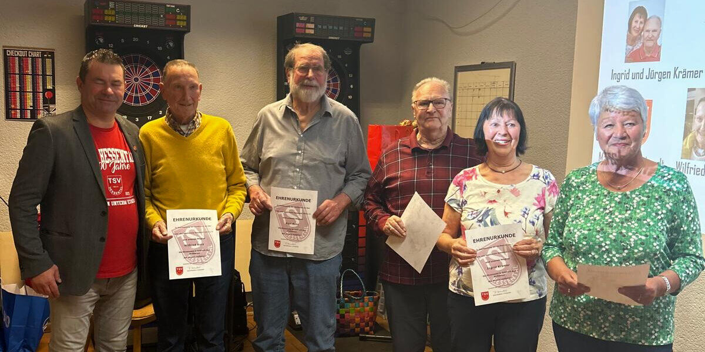
Wechsel im Vorstand: Marco Ebinger folgt als 2. Vorsitzender auf Jens Ritter.
Berichte, Wahlen und Ehrungen von den Jahreshauptversammlungen des TSV Hessental – neueste zuerst.

Wechsel im Vorstand: Marco Ebinger folgt als 2. Vorsitzender auf Jens Ritter.
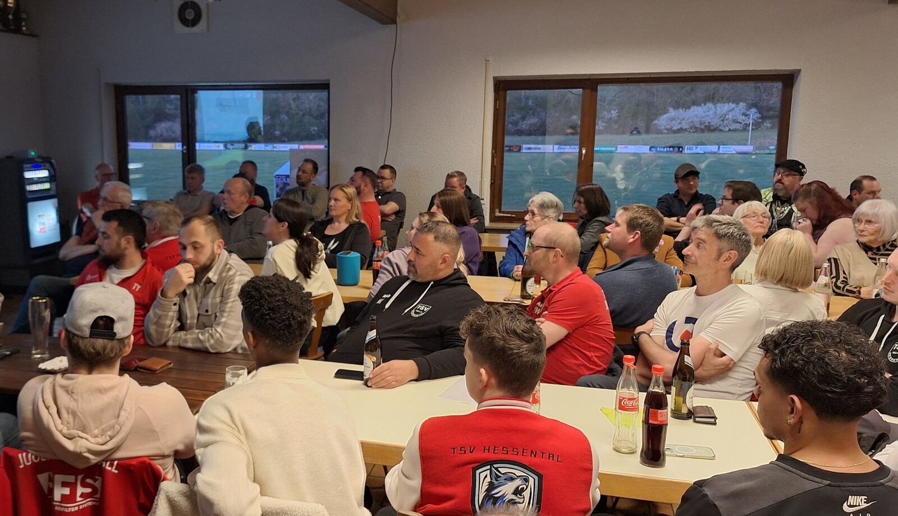
Wechsel im Vorstand: Julia Krämer übergibt Kasse an Timo Breitschwerdt.
| Gold | Helga Beck, Reinhard Kühne, Wolfgang Kurz, Thomas Müller, Margarete Schelle, Uwe Stölle, Marco Ventura |
|---|---|
| Silber | Sergei Dreiling, Dimitri Fedoruk, Susi Frey, Nico Grindler, Erik Kronmüller, Adrian Haag, Bettina König, Eugen Kunz, Waldemar Probst, Sandra Reber, Ulrich Reber, Doris Unser |
| Bronze | Lars Anskinewitsch, Gudrun Bayer, Marlene Castner, Sebastian Fabian, Jakob Krout, Gerlinde Schuster, Tatjana Weber, Alex Wittmann |
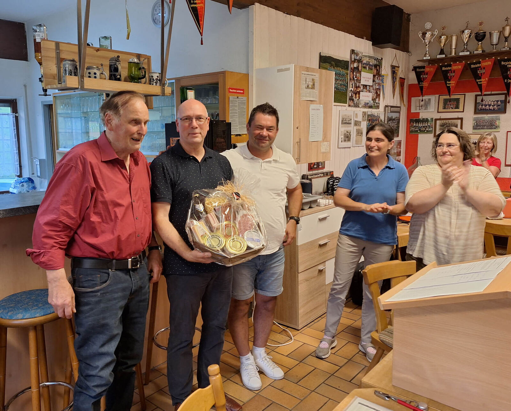
Wechsel im Vorstand: Peter Dierolf übergibt sein Amt an Rainer Brandtner
| Gold | Marc Greiner, Oliver Greiner, Jens Ritter |
|---|---|
| Silber | Stefan Holl, Julia Krämer, Erik Kronmüller, Eugen Kunz, Sandra Reber, Ulrich Reber |
| Bronze | Nadja Berroth, Marcel Fischer, Claudia Greiner, Alexander Wittmann |
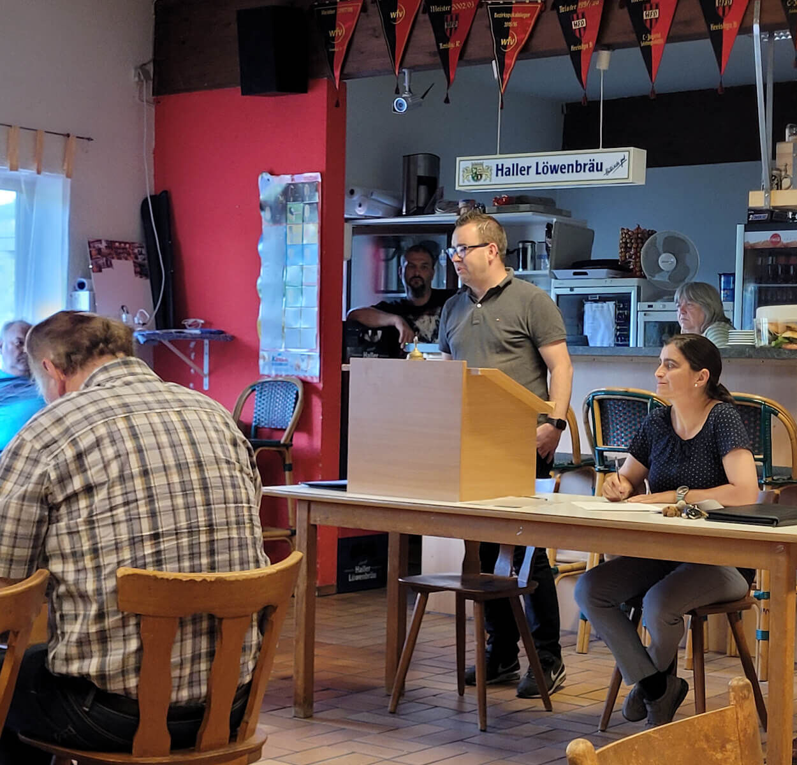
Marco Ebinger (Bild) Abteilungsleiter der Fußball-Herren berichtet von einer schwierigen Saison.
| Gold | Marco Ventura, Josef Wolf |
|---|---|
| Silber | Nico Grindler |
| Bronze | Lars Anskinewitsch, Daniel Bronner, Nicole Deeg, Susanne Frey, Igor Gofmann, Stefan Schwörer |
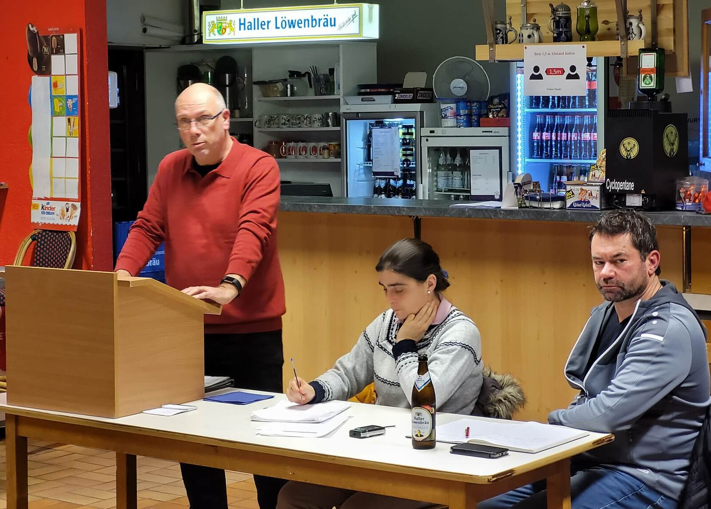
1. Vorstand Peter Dierolf informiert über die allgemeine Lage des Vereins.
Höhepunkte des Abends waren die Ehrungen und Berichte aus den Abteilungen.
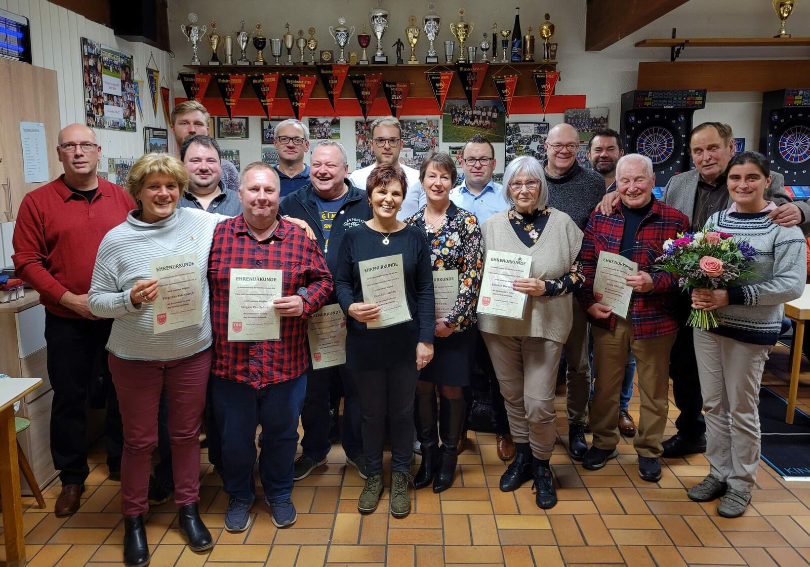
| Gold | Sieglinde Erlenbusch, Nicole Gronbach, Eugen Heinold, Roman Jörg, Jürgen Kantlehner, Hilde Klingler, Karl-Dieter Nagel, Helga Randi, Herbert Rohrweck, Jochen Schneider, Sabine Wolf |
|---|---|
| Silber | Sergei Dreiling, Barbara Dreschner, Marco Ebinger, Holger Frey, Dr. Christoph Hespelt, Annett Köhler, Stefan Konnerth, Timo Laukenmann, Antonio Mota, Tom Rodehau, Doris Schwörer, Thomas Thiel, Patrick Walz |
| Bronze | Alexander Befus, Klaus Blumenstock, Dimitri Fedoruk, Karlheinz Fischer, Martin Gäbler, Adrian Haag, Ilona Konietschke, Bettina König, Ricardo Kosche |
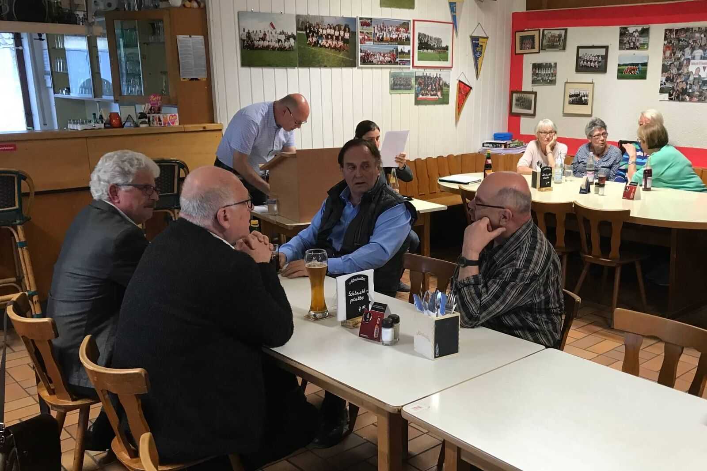
TSV Hessental am Puls der Zeit – Verein will sich für die Zukunft rüsten
In vertrauter Atmosphäre verlief die Jahreshauptversammlung des TSV Hessental. Treue Mitglieder und Gäste hatten sich eingefunden, um die Berichte des Vorstandes und der Spartenleiter zu hören und Vorstandswahlen abzuhalten.
Der 1. Vorsitzende Peter Dierolf begrüßte die Ehrengäste Thomas Preisendanz (Vorsitzender des Stadtverbandes für Sport), Rüdiger Schorp (Ehrenamtlicher stellvertretender Oberbürgermeister) und den Ehrenvorsitzenden Unser Claus.
Anschließend hielt man zum Totengedenken kurz inne, im vergangenen Jahr verstarb Susanne Thiel, Alois Kurz und Arnulf Lamparter. Im Anschluß wurden die Ehrengäste um ein kurzes Grußwort gebeten.
Rüdiger Schorp beschrieb den Verein in seinen Grußworten als integrative Institution, die Alte, Junge und Neubürger zusammenführe, quasi als ‚Kitt der Gesellschaft‘. Anschließend folgten weitere Grußworte durch Thomas Preisendanz. Er sieht den TSV Hessental als einen Leuchtturm der Gemeinde und lobt das spürbar intakte Vereinsleben.
Der TSV Hessental zählte zum Jahreswechsel 558 Mitglieder und rechnet wegen der stetig steigenden Einwohnerzahl von Hessental mit Zuwachs. Der 1. Vorsitzende Peter Dierolf mahnte an, dass eine Schulturnhalle nicht ausreichend sein werde, wenn man dem Vereins- und Schulsport künftig gerecht werden wolle. Er baue stark auf die Unterstützung der Stadt.
Im Jahr 2018 seien diverse Investitionen getätigt worden, um den Verein weiter auszubauen. Sponsoren und Zuschüsse würden deshalb dringend benötigt. Die Mitgliedsbeiträge werden aufgrund der 2018 in Kraft getretenen Änderungen der Sportförderrichtlinien angepasst. Alle Mitglieder sollen über die bevorstehende Änderung zum 1. Januar 2020 informiert werden. Ein entsprechender Beschluss wurde einstimmig gefasst.
Weniger gute Nachrichten hatte Fußball-Abteilungsleiter Marco Ebinger über die Lage der ersten Mannschaft zu vermelden. Dennoch blicke er positiv in die Zukunft und rüste sein Team für die kommende Saison. Hervorzuheben sei unter anderem der Teamgeist der Truppe. Highlights seien auch die besonders schönen Feste.
Fußballjugendleiter Peter Dierolf berichtete über die Ergebnisse der Jugendmannschaften. Alle Teams seien sehr gut besetzt und könnten im Folgejahr wieder aufgestellt werden. Weiterhin sei es aber problematisch, in größerem Umfang Trainer zu finden.
Antonio Mota beschrieb die Entwicklung der Dartgruppe als durchaus positiv und sehe im Dart eine Trendsportart. Auch die Turnabteilung ist mit ihren verschiedenen Angeboten für Jung und Alt gut aufgestellt. Das Kinderturnen verzeichne ständigen Zuwachs durch die Kooperation Schule und Verein.
Den an diesem Abend verhinderten Kassier Ricardo Kosche wurde eine übersichtliche, ordnungsgemäße und nachvollziehbare Kassenführung bescheinigt. Folgerichtig wurden Kassier und Vorstandschaft einstimmig entlastet.
Bei den turnusmäßigen Neuwahlen wurden der 2. Vorsitzende Rainer Brandtner, Marco Ebinger (Fußball Aktive), Peter Dierolf (Fußball Jugend), Michael Frey (Fußball Senioren) sowie die Beisitzer des Hauptausschusses und die Kassenprüfer einstimmig wiedergewählt. Antonio Mota wurde als Abteilungsleiter Dart neu gewählt.
Die Entlastung des Vorstands, durchgeführt von Stadtrat Thomas Preisendanz, wurde ordnungsgemäß und einstimmig vorgenommen.
Nicole Unser, Schriftführerin
| Gold | Heide Fischer, Eva Peters |
|---|---|
| Silber | Andreas Probst |
| Bronze | Alexander Becker, Mario Bronner, Eugen Kunz, Atila Rupa, Daniel Schiele |
| 25 Jahre | Kurt Schust, Unser Claus |
|---|---|
| 10 Jahre | Andreas Probst, Jens Ritter, Thomas Thiel |
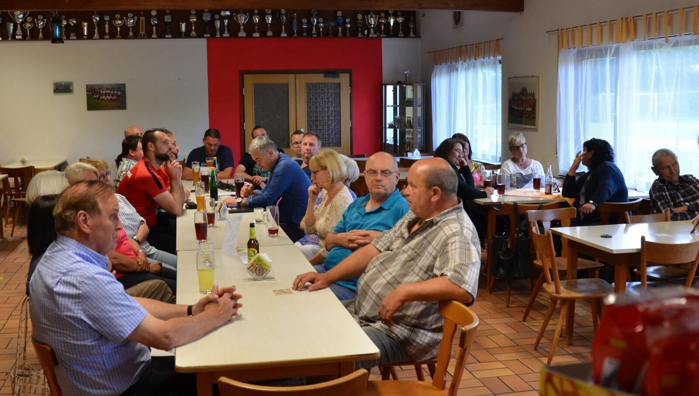
„Der Verein ist für uns Familie“
Der 1. Vorsitzende Peter Dierolf begrüßte die anwesenden Vereinsmitglieder und erinnerte in seinem Jahresrückblick an die wichtigsten Ereignisse des abgelaufenen Vereinsjahres, auch die Zukunftsperspektiven kamen zur Sprache. Der Verein hat derzeit 540 Mitglieder und bietet den Bürgern zahlreiche Möglichkeiten sich sportlich zu betätigen.
Als Glücksgriff bezeichnete der 1. Vorsitzende den neuen Pächter des Vereinsheimes Jürgen Baldreich. Künftig kann man im Vereinsheim nicht nur was essen, sondern es ist auch regelmäßig geöffnet. Ab der neuen Saison gibt es auch eine Dartmannschaft unter dem Namen „Hessental Skorpions“. Zwei elektronische Dartautomaten sind nun vorhanden, die außerhalb der Trainingszeiten von jedermann genutzt werden können.
Abteilungsleiter Andreas Probst sprach über den Spielbetrieb der Fußball Aktiven. Allein das Ergebnis, dass sich die Mannschaft für das Bezirkspokalendspiel qualifiziert hat, war überragend. „Auch wenn wir nicht gewonnen haben, so haben wir wenigstens gefeiert, als ob wir gewonnen hätten“. Die Bezirksliga wurde gehalten trotz widriger Umstände, die man verkraften musste.
Fußballjugendleiter Peter Dierolf berichtete über die Ergebnisse der Jugendmannschaften. Alle Mannschaften sind gut besetzt und können im Folgejahr wieder aufgestellt werden. Er betonte, dass dies ohne die ehrenamtliche Tätigkeit von Trainern, Betreuern und Helfern nahezu unmöglich sei und bedankte sich dafür. Peter Dierolf bedauert aber, dass das Zugehörigkeitsgefühl in den Vereinen bereits im Jugendbereich nicht mehr so stark ausgeprägt ist wie früher und die Spieler sich wegen irgendwelchen Versprechungen leicht abwerben lassen.
Auch die Turnabteilung ist mit ihren verschiedenen Angeboten für Jung und Alt gut aufgestellt. Eva Peters baut in ihrer Gruppe auf Geselligkeit und Zusammenhalt, weshalb Sie regelmäßig mit ihren Turnerfrauen Ausflüge organisiert. Die Fitnessgruppe wird seit diesem Jahr geleitet von Nadine Ventura. Sie erweitert ihr Angebot künftig um eine Mädchentanzgruppe. Das Kinderturnen verzeichnet ständiges Wachstum durch die Kooperation Schule und Verein.
Als ganz großes Manko sieht der 1. Vorsitzende die nicht vorhandene sporttaugliche Turnhalle. Als größter Schwäbisch Haller Teilort mit bald 8000 Einwohnern ist die kleine Schulturnhalle für die Weiterentwicklung des Vereins und Integration der Neubürger völlig ungeeignet.
Wirtschaftlich gesehen steht der TSV Hessental auf gesunden Füßen. Es wurde gut gewirtschaftet, da der Verein trotz steigender Ausgaben schuldenfrei ist. Kassenprüfer Walter Dierolf hatte keine Beanstandungen.
Nach den Berichten der Abteilungen wurde die Vorstandschaft einstimmig von den Mitgliedern entlastet.
Bei den turnusmäßigen Neuwahlen wurde der 1. Vorsitzende Peter Dierolf einstimmig wiedergewählt, ebenso die Schriftführerin Nicole Unser und der Abteilungsleiter Fußball Senioren Michael Frey. Neu gewählt wurde als Abteilungsleiter Fußball Aktive Marco Ebinger, der die Nachfolge von Andreas Probst antritt. Dieser wird aber Beisitzer im Hauptausschuss.
Die Entlastung des Vorstands, vorgenommen durch den Ehrenvorsitzenden Unser Claus, wurde satzungsgemäß und einstimmig vorgenommen. Unser Claus betonte: „Für uns ist der Verein Familie“.
Nicole Unser, Schriftführerin
| Gold | Susanne Rieck |
|---|---|
| Silber | Susanne Brenner, Michael Probst, Slawek Radzik, Barbara Rappold, Regine Schneider |
| Bronze | Dieter Brenner, Marco Fischer, Nico Grindler, Dominik Holl, Erik Kronmüller |
Harmonische Jahreshauptversammlung – Satzungsänderung beschlossen
Am Abend des 19. Mai begrüßte der 1. Vorsitzende Peter Dierolf über 50 Vereinsmitglieder zur Jahreshauptversammlung im Sportheim. Nach der Begrüßung folgte eine Schweigeminute für die im vergangenen Jahr verstorbenen Vereinsmitglieder Klaus Hornung und Hedwig Wagner. Danach vermittelte der 1. Vorsitzende einen Rückblick auf das vergangene Vereinsjahr sowie die aktuelle Situation des Vereins. Er betonte das anspruchsvolle, breitbandige Sportangebot des Vereins, der mittlerweile 541 Mitglieder hat.
Der 1. Vorsitzende betonte die Bedeutung des Generationen übergreifenden Miteinanders im Verein und bedankte sich bei allen Helferinnen und Helfern für das vorbildliche ehrenamtliche Engagement und die tatkräftige Unterstützung. Nur durch die aktive Mitarbeit der Mitglieder kann die Zukunft des TSV gesichert werden. Ein großes Dankeschön ging an Dieter Erdmann für die tagesaktuell und lebendig gestaltete Webpräsenz des TSV Hessental.
Vom Hauptkassier Ricardo Kosche kam die gute Nachricht, dass der Verein frei von Schulden ist, trotz steigender Energie- und Reparaturkosten des Vereinsheimes. Beim anschließenden Kassenbericht von Walter Dierolf waren keine Beanstandungen vermerkt. Die Entlastung des Hauptkassiers sei jederzeit gewährleistet.
Der Vorstand und die Spartenleiter informierten in interessanten Berichten über die Geschehnisse im vergangenen Jahr. Der Bezirksligist des TSV Hessental holte sich erneut die Hallenmeisterschaft der Stadt bei den Fußball-Aktiven.
Ein weiterer wichtiger TOP an diesem Abend waren die Wahlen. Der 1. Vorsitzende Peter Dierolf und Kassier Ricardo Kosche wurden erneut einstimmig in das Ehrenamt gewählt. Die Abteilungsleiter Fußball-Aktive: Andreas Probst, Fußball-Jugend: Peter Dierolf und Fußball-Senioren: Michael Frey wurden einstimmig wieder gewählt. Darauffolgend wurde der Hauptausschuss sowie die Beisitzer (Markus Gerstenberg, Oliver Greiner, Michael Probst, Jens Ritter, Thomas Thiel und neu im Amt: Jürgen Kantlehner) einstimmig gewählt.
Abschließend wurde die gesamte Vereinssatzung durchleuchtet und auf den Prüfstand gestellt. Heraus kamen einige neue Formulierungen der einzelnen Paragraphen und deren Aussagen. Klar, dass nun Diskussionsbedarf bestand. Offenbar überzeugte die Neugestaltung die anwesenden Mitglieder aber, denn die vom Vorstand erarbeitete Satzung wurde einstimmig abgesegnet.
Nicole Unser, Schriftführerin
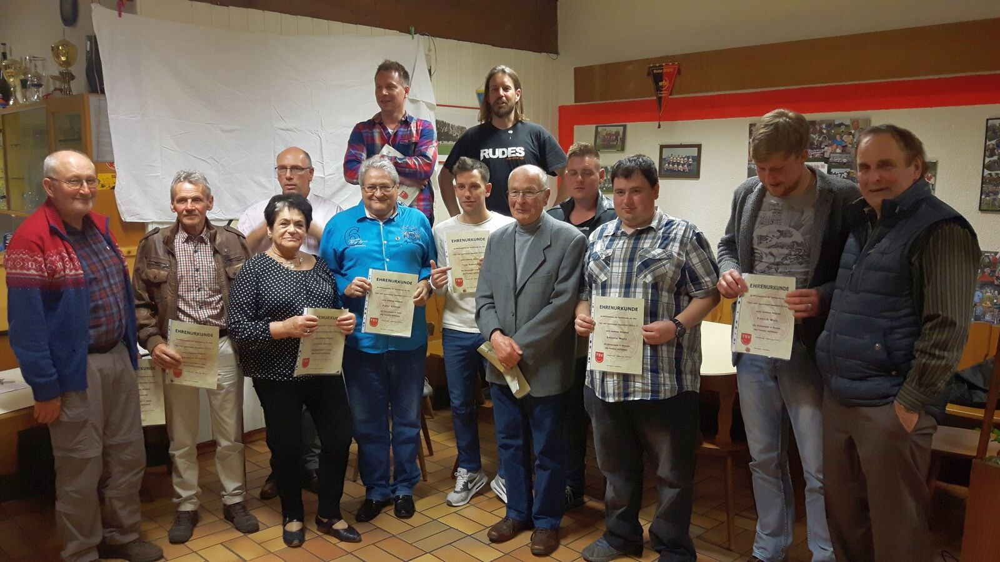
Hinten von links: Frank Schust (15 Jahre), Udo Lösch (25 Jahre)
Vorne von links: Gerd Simon (25 Jahre), Edmund Schelle (40 Jahre), 1. Vorstand Peter Dierolf, Christa Bettac (15 Jahre), Peter Kühnel (40 Jahre), Tom Rodehau (10 Jahre), Alois Kurz (40 Jahre), Michael Schelle (15 Jahre), Antonio Mota (10 Jahre), Patrick Walz (10 Jahre), Ehrenvorsitzender Claus Unser
Auf dem Bild fehlen: Monika Hofmann (40 Jahre), Corinna Hohenstein (15 Jahre), Karlheinz König (25 Jahre), Uwe Kopp (15 Jahre), Rolf Kotlowski (25 Jahre), Barbara Leimkühler (25 Jahre), Theodor Mayer (25 Jahre), Oxana Nehring (10 Jahre), Renate Ockert (15 Jahre), Jürgen Windmüller (25 Jahre), Otto Windmüller (40 Jahre), Alfred Wrobel (25 Jahre), Karsten Wullkotte (15 Jahre)
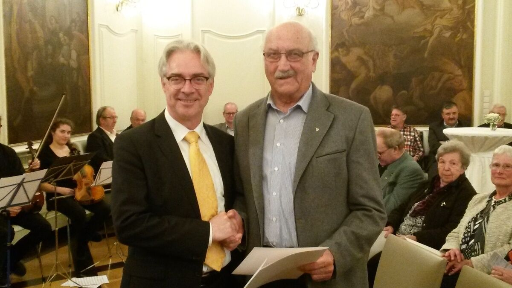
Roland Heckelmann wurde für 70 Jahre Mitgliedschaft beim TSV Hessental von Oberbürgermeister Pelgrim geehrt. Der TSV Hessental gratuliert zu dieser außerordentlichen Ehrung.
Er wurde 1947 Mitglied beim TSV Hessental. Er war lange Jahre Fußball-Jugendleiter und baute Anfang der 60-er Jahre die Tischtennis-Abteilung auf, die unter seiner Regie große Erfolge feierte. Hierfür möchten wir recht herzlich „Dankeschön“ sagen.
Ehrung für 50 Jahre Mitgliedschaft beim TSV Hessental
Kurt Bonz, Fritz Dierolf, Horst Dürr, Dieter Erdmann, Horst Gentner, Helmut Gronbach, Ingrid Krämer, Jürgen Krämer, Wilfried Kurz, Wilma Schwerin, Franz Tomerl, Wolfgang Windmüller, Peter Falk, Arnulf Lamparter, Reinhold Wagner.
Ehrung für 10 Jahre Ehrenamt beim TSV Hessental
Michael Frey (Jugendtrainer und Abteilungsleiter Fußball Senioren), Jürgen Kantlehner (Betreuer Fußball Herren)
Knapp 40 Mitglieder fanden am 17. Juni den Weg ins Sportheim. Gleich zu Beginn lobte der 1. Vorsitzende Peter Dierolf die gute Zusammenarbeit im Verein und betonte, dass es Spaß macht, in einem Team die Attraktivität des TSV Hessental weiter zu steigern. In seiner Eingangsrede hob Peter Dierolf besonders das Ehrenamt und seine Bedeutung für den Verein hervor. Er betonte, dass künftig das ehrenamtliche Engagement spürbar verbessert werden müsse, um den Verein auch für die weitere Zukunft auf einen guten Weg zu bringen.
Der Vorstand und die Spartenleiter informierten in interessanten Berichten über die Geschehnisse im vergangenen Jahr.
Der agile, zielstrebige Andreas Probst berichtete über die Lage der Fußball-Aktiven. Mit deren Leistung war er außerordentlich zufrieden, denn diese kamen in der Bezirksliga auf den achten Platz und wurden zudem Bezirkspokalsieger. Bei der Fußball-Jugend harmoniert die Spielgemeinschaft mit dem TSV Sulzdorf sehr gut, was sich auch in deren Leistung wiederspiegelt. Dies solle deshalb in Zukunft ausgeweitet werden, so die Meinung des Jugendleiters Peter Dierolf.
In der Abteilung Turnen, speziell im Kinderturnen, verzeichnet der Verein einen kaum zu bewältigenden Zuwachs, weshalb hier dringend die dafür notwendigen Ressourcen zeitnah zur Verfügung gestellt werden müssen.
Ein sehr anschaulicher Bericht von Kassenwart Ricardo Kosche machte deutlich, dass der Verein ein solides finanzielles Fundament hat.
Bei der Wahl des Vorstandes wurde Rainer Brandtner als 2. Vorsitzender neu in das Ehrenamt gewählt. In Ihren Positionen bestätigt wurden Peter Dierolf (1. Vorsitzender), Ricardo Kosche (Kassenwart), Nicole Unser (Schriftführerin), Walter Dierolf (1. Kassenprüfer) und Lars Anskinewitsch (2. Kassenprüfer).
Nicole Unser, Schriftführerin
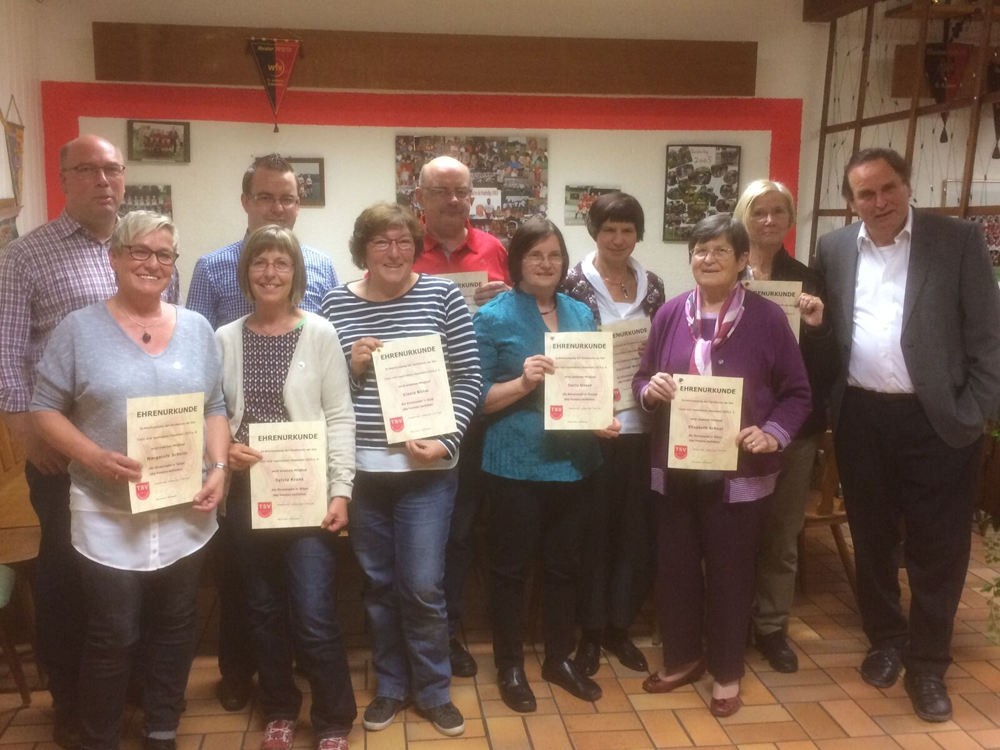
Hinten von links: 1. Vorstand Peter Dierolf, Marco Ebinger (10 Jahre), Walter Dierolf (25 Jahre), Gerlinde Wolf (40 Jahre), Barbara Dreschner (10 Jahre), Ehrenvorsitzender Claus Unser
Vorne von links: Margarete Schelle (15 Jahre), Sylvia Kranz (15 Jahre), Gisela Böhm (25 Jahre), Doris Unser (15 Jahre), Elisabeth Schust (15 Jahre)
Auf dem Bild fehlen: Charlotte Blumenstock (15 Jahre), Andrea Bronner (25 Jahre), Christa Diez (10 Jahre), Sergei Dreiling (10 Jahre), Ruth Faast (25 Jahre), Holger Frey (10 Jahre), Margot Gahm (15 Jahre), Markus Gerstenberg (25 Jahre), Oliver Hamann (25 Jahre), Martin Herzog (25 Jahre), Elke Kärcher (15 Jahre), Julia Krämer (15 Jahre), Gunda Lange (15 Jahre), Jörg Laukenmann (25 Jahre), Holger Malich (25 Jahre), Reiner Otterbach (40 Jahre), Waldemar Probst (15 Jahre), Elke Röseler (15 Jahre), Claudia Schnotz (15 Jahre), Simone Schön (25 Jahre), Hermann Schulz (10 Jahre), Werner Tänzer (15 Jahre), Susanne & Thomas Thiel (10 Jahre), Alois Wolf (40 Jahre)